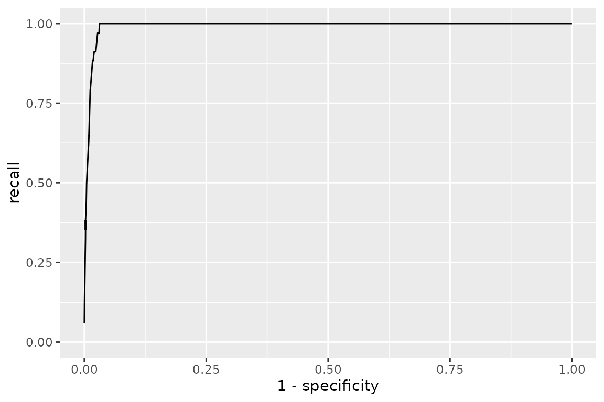

Running and fitting models on naturalistic corpora
George Kachergis
2026-09-04
Source:vignettes/corpora.Rmd
corpora.RmdMost of XSLmodels is built around controlled
cross-situational learning experiments: a handful of words and objects,
a designed training order, and a vector of human accuracies to fit with
sum-of-squared-error. This vignette is about the other kind of input –
naturalistic corpora of caregiver speech paired with
the objects present in the scene. There is no human referent-selection
data to fit; instead we ask how well a model’s learned word–object
matrix recovers a gold-standard lexicon.
Two such corpora ship with the package, imported from the wurwur package:
rollins_corpus$data
#> xslData object with label "Rollins" and condition "CHILDES naturalistic corpus (Frank, Goodman & Tenenbaum, 2009)"
#> training trials: 619
#> test trials: 0
#> words: 416
#> objects: 22
#> accuracies: 0
fm_corpus$data
#> xslData object with label "FM" and condition "Frank, Tenenbaum & Fernald naturalistic corpus"
#> training trials: 4763
#> test trials: 0
#> words: 1122
#> objects: 30
#> accuracies: 0-
rollins_corpus– 619 mother-to-infant utterances from the Rollins corpus in CHILDES; the corpus the intentional Bayesian model of Frank, Goodman & Tenenbaum (2009) was originally fit to. -
fm_corpus– the larger Frank, Tenenbaum & Fernald corpus: 4763 utterances, and (unlike Rollins) the speaker’s referential intention is hand-coded for each utterance.
Each is a list, not a bare xslData:
names(rollins_corpus)
#> [1] "data" "gold" "reference"
names(fm_corpus)
#> [1] "data" "intents" "gold" "gold_variants"
#> [5] "reference"$data is the training xslData;
$gold is the reference lexicon. Note that words and objects
here are the actual strings, not integer ids:
rollins_corpus$data$train$words[[1]]
#> [1] "ahhah" "look" "we" "can" "read" "books" "david"
rollins_corpus$data$train$objects[[1]]
#> [1] "book" "bird" "rattle" "face"
str(rollins_corpus$gold)
#> List of 2
#> $ words : chr [1:34] "baby" "bear" "bigbird" "bigbirds" ...
#> $ objects: chr [1:34] "baby" "bear" "bird" "bird" ...Running a model
xsl_run() works exactly as it does for experimental
conditions – it returns a fitted object whose matrix is the
learned word (rows) by object (columns) association matrix.
res <- suppressWarnings(xsl_run(baseline(), rollins_corpus$data))
m <- res$fits[[1]]$matrix
dim(m)
#> [1] 416 22
# co-occurrence counts for one word (this corpus is a picture-book session,
# so the objects are animals and toys -- "moocow", "piggie", etc.)
sort(m["moocow", ], decreasing = TRUE)[1:4]
#> cow pig rattle book
#> 8 3 3 1Two things to know:
-
Ignore
res$sseandres$fits[[1]]$perf. Those compare againstdata$accuracy, which is empty for a corpus.xsl_run()still computes them (falling back toget_perf()), which is where the"longer object length is not a multiple of shorter"warning above comes from – the matrix is not square. It is harmless here; we score against the gold lexicon instead. - The batch model
fgt2009()(below) does joint inference over the whole corpus and has no learning trajectory, socontrol$repsdoes nothing for it.
Scoring against the gold lexicon
The evaluation helpers take a
gold_lexicon = list(words, objects). Because a model’s
matrix is real-valued, the score depends on a threshold
for counting an edge as “learned”. [get_fscore()] scores one
threshold:
get_fscore(m / rowSums(m), threshold = 0.1, gold_lexicon = rollins_corpus$gold)
#> # A tibble: 1 × 5
#> threshold precision recall fscore specificity
#> <dbl> <dbl> <dbl> <dbl> <dbl>
#> 1 0.1 0.143 0.912 0.247 0.977[get_roc()] sweeps thresholds (row-normalizing the matrix first), and [get_roc_max()] returns the best F-score over that sweep – the standard single-number summary:
roc <- get_roc(m, gold_lexicon = rollins_corpus$gold)
head(roc, 3)
#> # A tibble: 3 × 5
#> threshold precision recall fscore specificity
#> <dbl> <dbl> <dbl> <dbl> <dbl>
#> 1 0 0.0294 1 0.0571 0
#> 2 0.01 0.116 1 0.207 0.966
#> 3 0.02 0.118 1 0.212 0.967
get_roc_max(m, gold_lexicon = rollins_corpus$gold)
#> [1] 0.3768116
plot_roc(m, gold_lexicon = rollins_corpus$gold)
Comparing a few associative models on Rollins:
assoc_models <- list(
baseline = baseline(),
decay = decay(C = 0.99),
rescorla_wagner = rescorla_wagner(C = 1, alpha = 0.1, beta = 0.1, lambda = 1),
fazly = fazly(lambda = 1e-5, beta = 8500)
)
sapply(assoc_models, function(mod) {
mm <- suppressWarnings(xsl_run(mod, rollins_corpus$data)$fits[[1]]$matrix)
round(get_roc_max(mm, gold_lexicon = rollins_corpus$gold), 3)
})
#> baseline decay rescorla_wagner fazly
#> 0.377 0.343 0.378 0.450The intentional Bayesian model
fgt2009() is the model built for exactly this problem:
it does joint posterior inference over a word–object lexicon for the
whole corpus at once, marginalizing the speaker’s referential intention
on each utterance. It is a batch MCMC model, so a
single run takes seconds to a minute or two on these corpora (much
slower than the associative tallies) and xslFit$matrix
holds posterior edge marginals
P(word names object | corpus).
The gamma parameter matters here.
gamma is the probability a word is used
referentially. In a controlled experiment every word is a
label, so the default is gamma = 1. Naturalistic speech is
full of non-referential words (“the”, “look”, “you”, “see”), so a corpus
wants the published gamma = 0.1, kappa = 0.05
– otherwise the model is forced to explain every function word as naming
something and learns almost nothing.
res <- xsl_run(
fgt2009(alpha = 3, gamma = 0.1, kappa = 0.05),
rollins_corpus$data
)
m_fgt <- res$fits[[1]]$matrix
# the learned lexicon: edges with posterior probability > 0.5
edges <- which(m_fgt > 0.5, arr.ind = TRUE)
data.frame(word = rownames(m_fgt)[edges[, 1]],
object = colnames(m_fgt)[edges[, 2]],
prob = round(m_fgt[edges], 2))
#> word object prob
#> 1 bear bear 1.00 # correct
#> 2 bottle bear 1.00 # "baby bottle" co-occurs with the bear
#> 3 bigbird bird 1.00 # correct
#> 4 book book 1.00 # correct
#> 5 moocow cow 1.00 # correct
#> 6 hat hat 1.00 # correct
#> 7 oink pig 1.00 # correct
#> ... # 28 edges total
get_roc_max(m_fgt, gold_lexicon = rollins_corpus$gold)
#> [1] 0.454 # MCMC: expect a little run-to-run variation“Fitting”: sweeping the lexicon-size prior
fgt2009()’s alpha penalizes lexicon size
(P(L) proportional to exp(-alpha * |L|)) and
has to scale with corpus size: too small gives a diffuse over-large
lexicon, too large an empty one. The F-vs-alpha curve is
single-peaked, so the right way to “fit” the model to a corpus is a
coarse sweep – which is what [fgt2009_sweep_alpha()] does. Pass
gold and it reports the best-threshold F-score at each
alpha:
sweep <- fgt2009_sweep_alpha(
rollins_corpus$data,
alphas = c(2, 4, 6, 9, 14),
gold = rollins_corpus$gold,
gamma = 0.1, kappa = 0.05,
n_warmup = 50, n_samples = 120 # a lighter sampler for the sweep
)
sweepThe curve rises to a shallow peak around
alpha = 2–4 and then falls off as the prior
forces the lexicon empty. Take the alpha near the peak;
that is the value to report, and the one to use for trial-by-trial
predictions ([predict_referent()]) or further analysis. On this small
corpus fgt2009 is in the same range as the better
associative models (fazly above); its advantage is largest
on data with more varied, informative co-occurrence.
The FM corpus and its coded intentions
fm_corpus is used the same way, but it is bigger and
comes with extra structure. fm_corpus$intents[[t]] is the
object(s) the speaker actually referred to on utterance t –
empty for the roughly half of utterances that are non-referential:
fm_corpus$data$train$words[[1]]
#> [1] "and" "whats" "that" "is" "this" "a" "puppy" "dog"
fm_corpus$intents[[1]]
#> [1] "dog"
mean(lengths(fm_corpus$intents) == 0) # fraction non-referential
#> [1] 0.5007348It also ships three gold lexicons – a hand-curated one plus two auto-derived from the coded intentions at different co-occurrence thresholds:
lengths(lapply(list(curated = fm_corpus$gold,
strict = fm_corpus$gold_variants$strict,
permissive = fm_corpus$gold_variants$permissive),
`[[`, "words"))
#> curated strict permissive
#> 41 39 116
m_fm <- suppressWarnings(xsl_run(baseline(), fm_corpus$data)$fits[[1]]$matrix)
sapply(list(curated = fm_corpus$gold,
strict = fm_corpus$gold_variants$strict,
permissive = fm_corpus$gold_variants$permissive),
function(g) round(get_roc_max(m_fm, gold_lexicon = g), 3))
#> Warning in max(fscores[!is.na(fscores)]): no non-missing arguments to max;
#> returning -Inf
#> curated strict permissive
#> 0.268 0.191 -InfThe permissive lexicon is larger and easier to hit some of, so absolute F-scores are not comparable across the three – pick one and use it consistently when comparing models.
A quick model comparison
tests/bakeoff_comparison/corpus_gold_comparison.R runs
every model once on each corpus and scores the learned matrix against
the corpus gold lexicon. It is deliberately not a
fitted bake-off: the associative and sampling models use
xsl_model_registry()’s starting parameters (calibrated
defaults, not re-fit here), and fgt2009() uses
gamma = 0.1, kappa = 0.05 with
alpha from the two-point heuristic
round(7 * sqrt(n / 600)).
| model | Rollins | FM |
|---|---|---|
| bayesian_decay | 0.449 | 0.450 |
| fazly | 0.450 | 0.407 |
| fgt2009_rsa | 0.395 | 0.421 |
| fgt2009 | 0.385 | 0.421 |
| uncfam_sampling | 0.377 | 0.353 |
| multi_sampling | 0.377 | 0.353 |
| uncfam_attention | 0.371 | 0.354 |
| uncfam | 0.371 | 0.353 |
| guess_and_test | 0.409 | 0.297 |
| softmax_rl | 0.407 | 0.258 |
| baseline | 0.377 | 0.268 |
| rescorla_wagner | 0.312 | 0.290 |
| decay | 0.320 | 0.272 |
| propose_but_verify | 0.321 | 0.236 |
| kalman_filter | 0.303 | 0.211 |
| pursuit | 0.353 | 0.048 |
| uncfam_predictive | 0.208 | 0.091 |
| tilles | 0.080 | 0.048 |
Reading the table:
-
bayesian_decayandfazlycome out on top (F around 0.45 on both corpora), withfgt2009close behind. -
fgt2009trades recall for precision. On FM its precision is ~0.71 against ~0.2–0.34 for the others: the geometric size prior makes it commit to a small, mostly-correct lexicon rather than a large noisy one. Whether that is the right tradeoff depends on what you want the lexicon for. - The RSA layer makes no difference on FM (
fgt2009==fgt2009_rsa): atalpha = 20the learned lexicon is sparse enough that no word names two co-present objects, so the pragmatic speaker reduces to the literal one. - The middle of the pack is a tight cluster around F = 0.35 – the
three
uncfamvariants and the two sampling versions all land there, which is reassuring since the sampling models are meant to approximateuncfam(). -
Every model now runs on both corpora, but several
needed fixes to get there. The sampling/RL models were built for
controlled experiments of a few dozen trials; running them on 4763
naturalistic utterances exposed a memory blow-up
(
xslControl()’skeep_traj = FALSEdefault), an error on the many non-referential utterances with no objects present, and two latent bugs (softmax_rl()andguess_and_test()comparing a sampled guess to object positions vs labels;guess_and_test()also mishandling a word repeated within one utterance;tilles()coercing its labels withas.integer()and returning an unnamed matrix).pursuitandtillesstill learn near-empty or diffuse lexicons on FM at the registry’s default parameters – read the low scores as “this parameterisation doesn’t transfer”, not “the model is broken”.
Fitting to a corpus
tests/bakeoff_comparison/corpus_gold_fits.R goes a step
further: for each model it runs a (parallel) DEoptim search over the
model’s parameters, maximizing the same best-threshold F against the
gold lexicon (these corpora have no accuracy vector, so
xsl_fit()’s SSE objective does not apply).
fgt2009() is fit by an alpha sweep instead.
uncfam_sampling() / multi_sampling() are left
at defaults – averaging many simulations per DEoptim evaluation over
4763 utterances is impractical.
| model | Rollins_default | Rollins_fitted | FM_default | FM_fitted |
|---|---|---|---|---|
| bayesian_decay | 0.449 | 0.465 | 0.450 | 0.560 |
| fgt2009 | NA | 0.452 | NA | 0.529 |
| fgt2009_rsa | NA | 0.447 | NA | 0.515 |
| fazly | 0.450 | 0.468 | 0.407 | 0.412 |
| softmax_rl | 0.361 | 0.449 | 0.276 | 0.463 |
| uncfam_attention | 0.371 | 0.438 | 0.354 | 0.443 |
| uncfam | 0.371 | 0.422 | 0.353 | 0.446 |
| guess_and_test | 0.378 | 0.440 | 0.308 | 0.362 |
| tilles | 0.080 | 0.417 | 0.048 | 0.385 |
| uncfam_predictive | 0.208 | 0.360 | 0.091 | 0.411 |
| propose_but_verify | 0.310 | 0.365 | 0.246 | 0.326 |
| rescorla_wagner | 0.312 | 0.348 | 0.290 | 0.324 |
| decay | 0.320 | 0.382 | 0.272 | 0.288 |
| kalman_filter | 0.303 | 0.382 | 0.211 | 0.274 |
-
Fitting lifts every model, and by a lot for the
ones whose registry defaults were tuned on controlled experiments:
tilles(+0.34 on both corpora),uncfam_predictive(+0.15 / +0.32),softmax_rl(+0.09 / +0.19). -
bayesian_decayfit to FM reaches F = 0.56 – clearly the strongest result – withfgt2009next at 0.53.fazlybarely moves (its defaults were already near-optimal for these corpora). -
fgt2009_rsafit (best of analphasweep) lands just belowfgt2009(0.45 / 0.52 vs 0.45 / 0.53) – the pragmatic layer neither helps nor hurts oncealphais chosen, because the fitted lexicon is still too sparse for a word to name two co-present objects. - The fitted parameters are in
corpus_gold_fits.rds.kalman_filter’ssigma2_obssits right at its upper bound, but that is a plateau, not a real constraint: the three Kalman parameters share a scale redundancy and the F landscape is flat insigma2_obsabove a few hundred, so the fit is the same F whether the bound is 500 or 20000. Read its fittedsigma2_obsas “large”, not as an estimate.
References
Frank, M. C., Goodman, N. D., & Tenenbaum, J. B. (2009). Using speakers’ referential intentions to model early cross-situational word learning. Psychological Science, 20(5), 578–585.
Frank, M. C., Tenenbaum, J. B., & Fernald, A. (2013). Social and discourse contributions to the determination of reference in cross-situational word learning. Language Learning and Development, 9(1), 1–24.